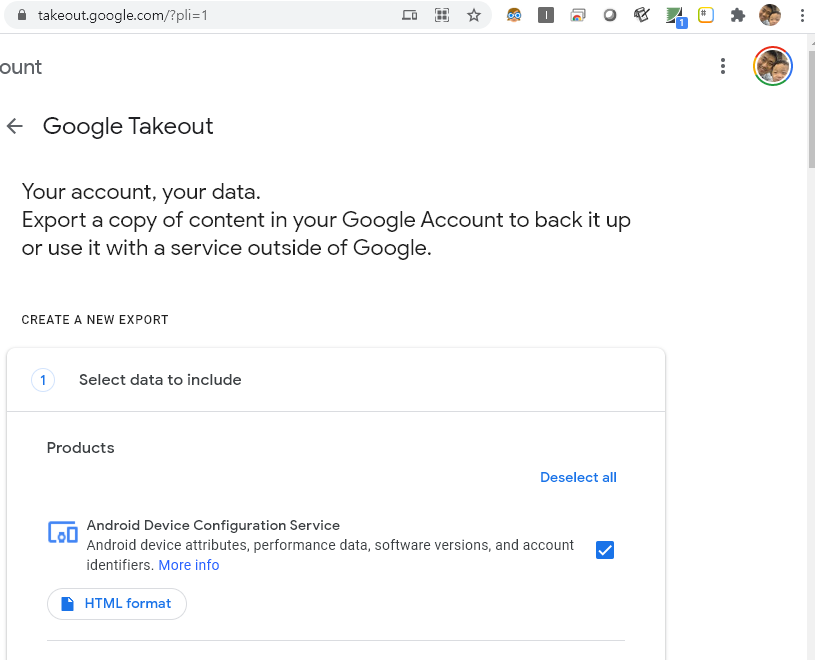
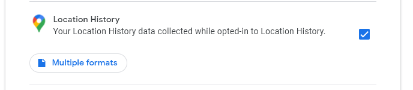
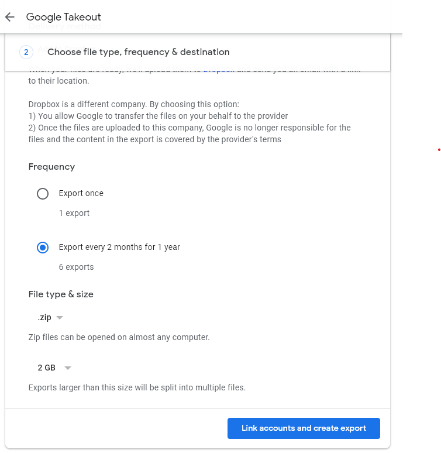
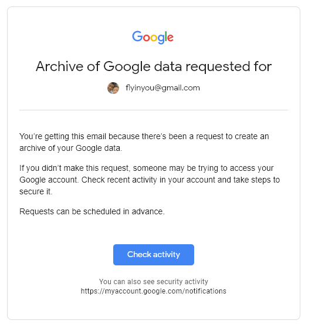
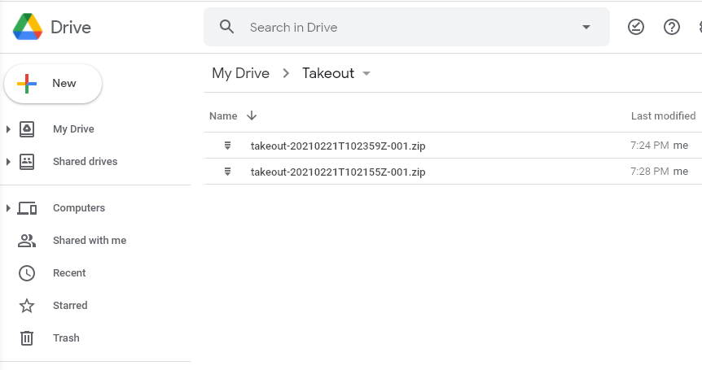

## install packages
if(!require('googledrive')) install.packages('googledrive')
## load library
library(googledrive)
options(httr_oob_default = TRUE)
drive_auth()
ls <- drive_ls(path = '/Takeout/',
pattern = "*.*")
ls14 Google Tackout
- Google Takeout
Let’s download the map data recorded by Google. * following steps + https://takeout.google.com + deselect All + select Location History + export + go to gmail and check activity, and back to takeout.google.com + click download with option google-drive + check Takeout folder in google-drive

google location history





- google drive download
- download takeout file from google drive
- takeout export option: google drive download
- check update data (every two month)
- goto google drive
- library(googledrive)
- download data
Now, let’s install the package and load the library. After that, we’ll run drive_auth() to connect to Google Drive. Follow the prompts by clicking ‘allow’ at each step. Finally, copy the key provided and paste it into the console.
Let’s find some files in Google Drive. Google Drive will ask you to verify your account and request permissions; please select ‘yes’ when prompted.
## link to google drive author...
drive_find(n_max = 10)
## serach
drive_find(type ="file", pattern ="Takeout/takeout-*.zip", n_max = 100)
ls <- drive_ls(path = '/Takeout/',
pattern = "*.*")
ls$name
ls$idHere, name refers to the file name and id is like an address used to download the Google file. Since it is a compressed file, let’s download it. I will download the second file from the list. Think about which file you want to download and try it yourself.
Now we are almost ready, By running this code, you will download a file from Google Drive, unzip it, and save the contents to your local directory
temp <- tempfile(fileext = ".zip")
data1 <- drive_download(as_id(ls$id[2]),
path = temp,
overwrite = TRUE)
out <- unzip(temp, exdir = paste0(getwd(), "/data"))
out14.1 Data Visualization
if(!require(jsonlite)) install.packages('jsonlite')
if(!require(ggmap)) install.packages('ggmap')
if(!require(ggplot2)) install.packages('ggplot2')
library(jsonlite)
library(ggmap)
library(ggplot2)
library(tidyverse)The download path is set as shown below. We’ll extract the location data, set the latitude and longitude, and plot the points accordingly.
map_data = fromJSON("data/Takeout/Location History/Location History.json")Next, we’ll process the data to generate latitude and longitude values, and we’ll keep only 50,000 records.
#map_data$locations
locations = map_data$locations
loc_dat1 = locations %>%
mutate(lat = latitudeE7/1e7,
lng = longitudeE7/1e7) %>%
mutate(year = str_sub(timestampMs, 1, 2),
month= str_sub(timestampMs, 3, 4))
loc_dat_sample = loc_dat1 %>%
slice(1:50000)Let’s load the Google map. An API key is required to use Google Maps, and the process to obtain an API key was explained in previous video.
key<-read.csv('security/gapi.csv')
register_google(key = key[1,2])
map <- get_map(
location = c(lon = 127.024612, lat = 37.532600),
zoom = 10,
source = 'google',
maptype = "roadmap" # Use a valid Google Maps map type such as "terrain", "satellite", "roadmap", etc.
)Now that we’ve downloaded the map, let’s plot our locations on it. We’ll color the points by month. For example, in July, the data shows visits to the National Health Insurance Service for big data analysis, while other months show visits to various factories.
ggmap(map) +
geom_point(data = loc_dat_sample,
aes(x = lng, y = lat, color = month), alpha = 0.5) +
theme(legend.position = 'right') +
labs(
x = 'longitute',
y = 'latitude',
title = "Location history of me"
)
14.2 google API
To use Google Maps, we need to utilize the Geocoding API.
구글 map API
- https://cloud.google.com/maps-platform/
- click
get start API libraryand View all of MapsMaps Static API→EnableCredentials→API key- copy and paste Key